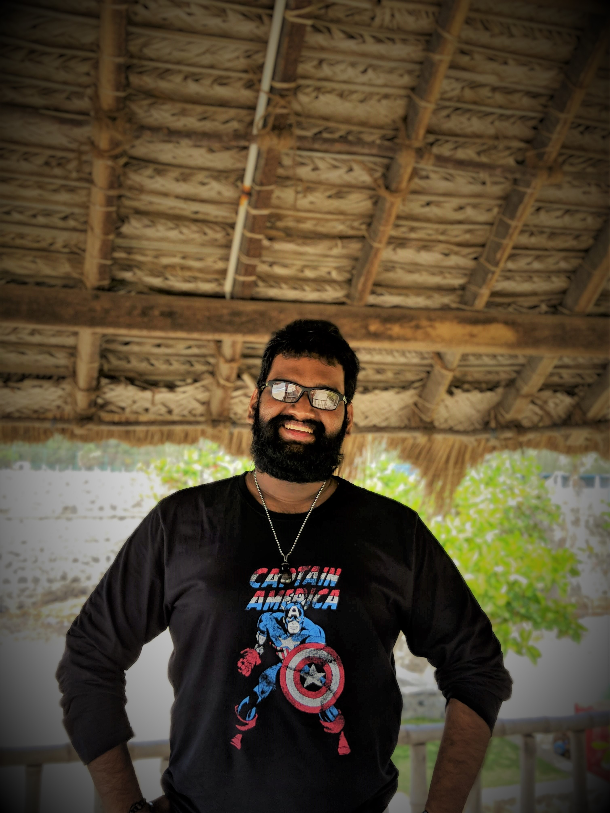

My Resume
Ashwin Kumar G
Associate Manager
ashwinskr007@yahoo.com

Executive Summary
- Seasoned Network Lead professional with years of robust experience in providing excellent technical Operations and user service to the Organizational users across APAC, Europe, Americas
- Proven track record of surpassing quality standards and taking initiative to introduce strategies to streamline operations and increase efficiencies
- Strong Operation experience with strong technical skills and high-level proficiency in computers and automated systems. Consistent in meeting and exceeding team's targets
- Effective at resolving user's concerns and solidifying user relationships
- Demonstrated strong team management skills. Excellent interpersonal and communication skills; able to coordinate and liaise effectively with people from diverse backgrounds
Key Skills
- LAN Management
- Server Management
- Team Management
- Strategic Decision Making
- Full Stack Web Developer
Professional Experience
Associate Manager
FEB 2021 till Present
Cognizant Technology Solutions
- Troubleshooting client application related issues (Includes - MS office 2003, 2007, 2010 & 2013, O365, Oracle, SQL, VMware, Server and Citrix)
- Adding/Removing/Creating users and groups and assigning users to appropriate groups in Active Directory and in Service Now
- Installing applications and configuring remotely on user's machine
- Updating servers with latest service packs and hot fixes
- Monitoring and raising tickets for various alerts using Service Now
- Unlocking the User Account, Finding Account Lockout Details in Radar Console and Clearing the Account Lockout from the Machine Level
- Handling Profile Related Issues in Active Directory
- Installation and configurations of various OS in Windows platform using WDS
- Installing Windows Server 2008/2012/2022 on Virtual Machine
- Bomgar & Antivirus, manual checks, and updates
- Academy Training software installation (Includes – Apple OS installation, installing and configuring SQL & Oracle database application, IBM application, Virtual machine)
- LAN, Wi-Fi & client configuration & troubleshooting
Network Engineer
April 2020 till Jan 2021
Zoho Corp
- Handled and managed all aspects of delivering Technical Support by phone to customers of clients providing Networks
- Performed Wireshark Capture if there are any conflicts on their network to analyze the root cause of the problem
- Need to Manage and Monitor the whole data center traffic, devices health aspects over tools
Team Lead - Network Service
Sept 2014 till April 2020
HCL Technologies
- Managed team of 40 Service Desk analysts in taking calls, resolving concerns, and providing technical support to users of key clients across UK, APAC (Singapore & Australia) , and US
- In charge of handling company's top corporate accounts. Manage collection of user feedback, data analysis, and conceptualization of new user care strategies
- Collaborate closely with Technology team to assist users resolve technical concerns to provide timely resolution and get User Satisfaction
- Key point of contact in identifying and solving problems. Instrumental in developing and implementing strategies such as added staff training to improve answering rate and meet overall targets
- Prepare and submit Daily Performance Reports to Manager and Senior Executives; review agents' performance and recommend candidates for promotions
Significant Achievement
- Managed user complaints effectively and maintained overall SLA of 98% with less than 1% repeat complaints; resulted in high user satisfaction rates (attrition rate of 2%)
- Played key role in developing specialized reporting for top corporate accounts
- Successfully motivated team to ensure high user satisfaction and awarded “Best Support Team” by Management
Awards and Certifications
- Best Employee of the year (2015, 2016, 2018, 2019 and 2021)
- Certifed Full Stack Developer
My Hobbies and Contact Details